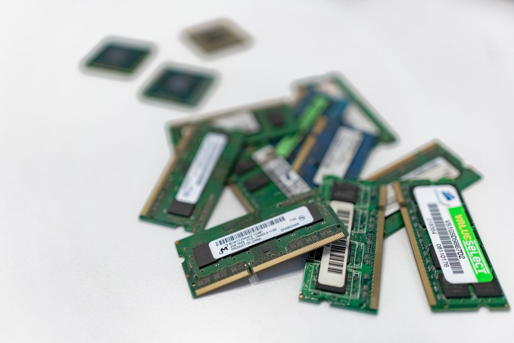

韓 반도체 5년 2배 목표, 美 AI 자본 없인 공염불

Spherical Insights 보도에 따르면 한국 정부는 2025~2030년 5개년 계획으로 반도체 생산능력을 현재 대비 2배로 확대하는 목표를 공식화했다. 구체적으로 삼성전자 평택 P5·P6 라인 증설, SK하이닉스 용인 클러스터(2027년 1단계 가동) 투자가 핵심 축이다.
미국 AI 인프라 투자 수요는 2025년 기준 데이터센터 신규 투자만 연 2,000억 달러를 상회한다. 엔비디아 H100·B200 GPU 수요에 연동된 HBM(고대역폭 메모리) 시장에서 SK하이닉스의 점유율은 2025년 기준 약 52%로, 미국 AI 자본 유치의 최우선 수혜 포지션이다.
산업부는 소부장 투자지원 예산을 기존 1,000억 원에서 1,700억 원으로 확대하고 중소·중견 기업 투자액의 최대 50%를 지원하기로 했다. 그러나 지원금 수령을 위한 AEC-Q 등 차량용 반도체 인증 취득 평균 기간이 18~24개월로, 실제 집행 효과는 2027년 이후로 후행한다.
'생산 2배' 목표의 실현 속도는 결국 미국 팹리스(퀄컴·AMD·애플 등)의 한국 파운드리 발주 확대 여부에 달려 있다. 미중 기술 분리가 심화될수록 TSMC 대안으로서 삼성 파운드리의 전략 가치는 높아지지만, 실제 양산 수주까지 18~36개월의 설계 검증 기간이 필요하다.
소부장 1,700억 지원 확대는 정책 방향은 맞지만 집행 구조에 함정이 있다. 인증 없는 지원금은 설비 투자로 흘러가지 않고 운영비로 소진될 가능성이 높다. 차량용 인증 지원과 패키징 기술 인력 양성을 선행하지 않으면 2030년 목표치에 20~30% 미달할 위험이 있다.
SK하이닉스는 HBM3E 양산 선도와 엔비디아 공급망 내 독점적 포지션으로 미국 AI 자본 유치의 직접 수혜자다. 2025년 HBM 매출 비중은 전체 D램 매출의 40%를 초과했으며, 용인 클러스터 완공 시 생산능력은 현재 대비 약 1.8배로 확대된다.
소부장 지원 1,700억의 실수혜는 포토레지스트·CMP슬러리·블랭크마스크 등 인증 사이클이 짧은 분야 중소기업에 집중될 전망이다. 이 영역에서 이미 삼성·SK와 장기 공급계약을 보유한 업체가 수혜 우선순위에 있다.
삼성 파운드리는 GAA 4nm 수율 안정화 지연으로 퀄컴·엔비디아의 신규 발주를 TSMC에 뺏긴 상태다. '2030년 생산 2배' 목표에서 삼성 파운드리 기여분은 시장 기대치 대비 20~30% 하향 조정될 가능성이 있다.
지방 소재 차량용 반도체 신규 진입 업체는 인증 기간 비용을 감당하기 어렵다. 1,700억 지원 중 인증 비용 보전 항목이 명확히 설계되지 않으면, 중소기업 실수혜율은 신청 대비 40% 이하에 그칠 수 있다.
투자자는 삼성전자보다 SK하이닉스의 HBM 수주 공시와 미국 AI 기업(마이크로소프트·메타·아마존) 설비투자 계획 발표를 연동해 모니터링해야 한다. HBM 단가가 분기별 5% 이상 하락하는 시점이 리스크 전환 신호다.
소부장 기업 투자 시에는 1,700억 지원 수혜 대상이 '신규 설비투자'인지 '운영자금'인지 공시 내역을 구분해야 한다. 설비투자 비중이 70% 미만인 업체는 실질 생산능력 확대 효과가 제한적이다.
실제 조달 현장에서는 — 미국 AI 기업의 한국산 HBM 발주는 이미 2025~2026년 물량까지 선계약이 완료됐고, 2027년 이후 물량 협상이 올해 4분기부터 시작되고 있다. 지금 SK하이닉스와 접촉하지 않는 구매 담당자는 2027년 할당량에서 후순위로 밀릴 수 있다.
이 포스팅은 쿠팡 파트너스 활동의 일환으로 수수료를 제공받습니다.